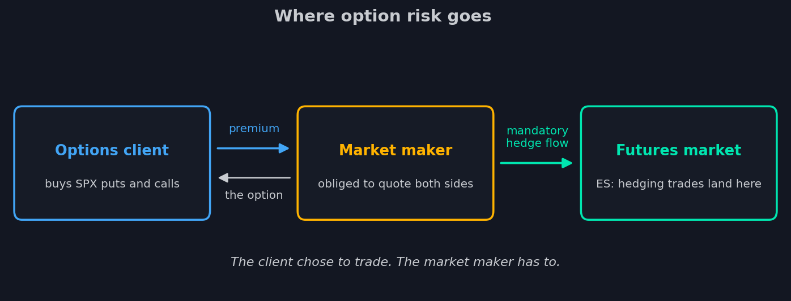
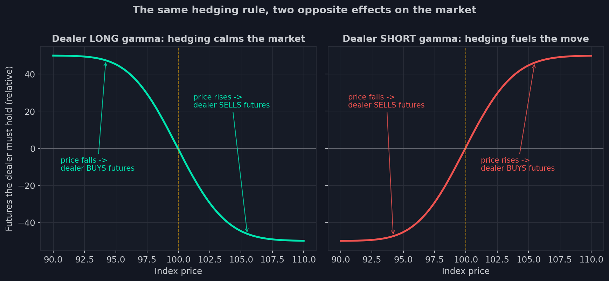

4. El market maker: el jugador más predecible del mercado
Abres tu terminal y compras quinientos puts del SPX con un solo clic. La operación
se ejecuta en una fracción de segundo. Ahora, una pregunta que casi nadie se
detiene a hacer: ¿quién te los vendió? Quinientos contratos de seguro contra un
crash — en el momento exacto en que los quisiste. No había ninguna cola de
vendedores entusiastas. Al otro lado de tu operación — como en casi toda operación
con opciones del mundo — había un participante sin el menor deseo de discutir
contigo sobre el futuro. Simplemente estaba obligado a responder.
La profesión: estar al otro lado
Un market maker (de aquí en adelante, MM; la literatura también llama dealer a
la misma firma) es una empresa cuyo trabajo es cotizar continuamente ambos lados
del mercado — una compra y una venta — en miles de opciones a la vez. ¿Quieres
comprar? Él vende. ¿Quieres vender? Él compra. La bolsa le concede privilegios por
ello, y él pretende ganar el spread — la diferencia de céntimos entre su precio de
compra y el de venta, repetida millones de veces.
Para que esto no quede en abstracción: los market makers no son «funciones de la
bolsa» y mucho menos particulares, sino las mayores firmas de trading del mundo —
Citadel Securities, Jane Street, IMC Trading y sus pares. Máquinas industriales con
miles de empleados, para las que cotizar opciones SPX es un negocio de cadena de
montaje.
Fíjate en lo que este modelo de negocio no contiene: una opinión sobre el mercado.
El MM no apuesta a la subida ni a la caída — vende liquidez. Pero tras un día de
ese trabajo, la posición se acumula sola: todo lo que los clientes compraron, él lo
ha vendido; todo lo que los clientes soltaron, él lo ha recogido. Su libro es la
imagen especular de los deseos de todo el mercado. Los clientes eligieron sus
operaciones. El MM no eligió su posición.

Recuerda ahora el payoff del vendedor de opciones de la lección 1: ganancia
limitada, pérdida ilimitada. El MM que te vendió quinientos puts perderá una
fortuna en un crash — si deja las cosas como están. No las dejará. Y lo que hace en
su lugar es el mecanismo central de todo este curso.
Cobertura delta, paso a paso
La tarea del MM es ganar el spread sin cargar riesgo de mercado. Así que el riesgo
hay que extinguirlo. Las instrucciones ya las escribimos en la lección 3, al
desmontar la delta: una posición en opciones equivale a una posición en el
subyacente.
Mira los números. Los clientes le compraron al MM 1.000 calls con delta 0,40. El
libro del MM: menos 1.000 calls — el equivalente de una posición corta de 400
unidades del índice. El mercado sube un punto, el libro pierde 400. La cura es
obvia: comprar futuros por esas mismas 400 unidades. Ahora un índice al alza gana
en los futuros exactamente lo que devoran los calls vendidos. La delta del libro es
cero; el MM es delta-neutral y gana tranquilamente su spread. (Simplificamos a
propósito los multiplicadores de contrato — la aritmética de los factores de
conversión no aporta nada al asunto.)
Ahí acabaría la historia si la delta se quedara quieta. Pero la lección 3 nos
enseñó: la delta está viva. El índice sube diez puntos — la delta de los calls
vendidos repta de 0,40 a 0,55. El libro del MM equivale ahora a un corto de 550
unidades, y solo hay compradas 400 unidades de futuros. Para volver a cero debe
comprar otras 150 — en un mercado que ya ha subido. ¿El índice retrocede? La
delta resbala hacia 0,40, los futuros sobrantes pesan sobre el libro — vender
150, en un mercado que ha caído.
Ahí está — el ajetreo prometido en la conversación sobre gamma. El MM no quiere
operar futuros — está obligado: cada movimiento del mercado rompe su neutralidad,
y persigue su propia delta todo el día. Ese ajetreo no es ruido de fondo. Por
volumen es una de las mayores fuerzas del mercado de futuros, y es enteramente
mecánico.
Dos regímenes: gamma gobierna el flujo
La dirección del ajetreo depende de un único signo — el signo de la gamma del
libro del MM. Y ese signo tiene dos regímenes, con efectos opuestos sobre el
mercado.

Los gráficos muestran la cantidad de futuros que el MM está obligado a mantener en
función del precio del índice. La regla de cobertura es una y la misma; observa
qué distinto se despliega.
El MM está largo de gamma (gráfico izquierdo) — en saldo, los clientes le han
vendido más opciones de las que le compraron: su libro está repleto de calls y
puts comprados. Entonces la posición de futuros requerida cae cuando el precio
sube: el mercado sube — el MM vende futuros; el mercado baja — los recompra. Vender
arriba y comprar abajo — el MM opera mecánicamente contra el movimiento. Miles de
esas operaciones amortiguan los vaivenes: el mercado se vuelve viscoso, los
movimientos se apagan y el precio parece atraído hacia los grandes strikes de
opciones. Ese efecto de atracción al strike se llama pin (pinning) — lo
encontraremos en los datos más de una vez.
El MM está corto de gamma (gráfico derecho) — los clientes le han comprado
sus opciones: pólizas de seguro, boletos de lotería, todo lo de la lección 1. La
curva se invierte: ahora, cuanto más alto el precio, más futuros debe mantener el
MM. El mercado sube — el MM compra detrás; el mercado cae — vende en su estela.
Cada movimiento se ve obligado a amplificarlo. Una caída engendra ventas del MM,
que profundizan la caída, que exige ventas nuevas. En un día tranquilo esto es un
traqueteo ligero; en uno malo, una espiral que se alimenta sola — y es en este
régimen donde ocurren los crashes más rápidos y los rebotes verticales más
feroces.
Asimila la asimetría de la culpa: en ambos regímenes el MM hace exactamente lo
mismo — mantiene el cero. Que estabilice el mercado o lo azote no lo decide él,
sino la posición agregada de sus clientes.
El libro del MM: de las posiciones al mapa
Un MM real no tiene mil calls, sino cientos de miles de posiciones en todos los
strikes y todos los vencimientos a la vez, y los largos y cortos dentro del libro
se cancelan parcialmente. Pero cualquier libro, por complicado que sea, tiene en
cada momento una línea de fondo: una delta total (que el MM mantiene en cero), una
gamma total y su signo.
Más aún — la contribución del libro puede descomponerse de vuelta por strikes:
aquí están los niveles donde se concentra la gamma, aquí es positiva, allá
negativa, y aquí está el precio en el que el signo de todo el libro se da la
vuelta. Lo que se obtiene es un mapa: dónde en la escala de precios están las
fuerzas que harán comprar al MM, y dónde las que lo harán vender. Ese mapa — la
exposición del MM — es exactamente lo que miden nuestros indicadores GEX. Cómo
calcularlo es lo que enseñarán las próximas lecciones.
Una advertencia honesta, sobre la que se sostiene toda la industria de la
analítica de opciones: nadie publica el libro del MM. Solo puede estimarse — a
partir de datos indirectos, con supuestos sobre en qué lado de las operaciones
estaban los clientes. Qué datos existen para ello, cuán frescos son y qué revelan
exactamente — de eso trata todo el resto del curso.
Por qué esto es oro
Detengámonos un segundo a apreciar lo que hemos ganado. Todo lo demás en el
mercado es opinión: un analista puede cambiar de idea, un fondo puede cancelar una
orden, la masa puede asustarse. El flujo de cobertura del MM es la única gran
fuerza obligada a presentarse: es mecánica, su dirección es calculable a partir
del libro y está anclada a niveles de precio concretos. Pronosticar los deseos
ajenos es difícil; las obligaciones ajenas se pueden calcular.
Dos advertencias para cerrar, para que el mapa no se endurezca en mito. El signo
de la gamma no dice nada sobre la dirección: gamma corta no es un pronóstico de
crash sino un amplificador de cualquier movimiento, arriba o abajo; gamma larga es
un freno, no una garantía de rally. Y el flujo de cobertura es una fuerza entre
muchas: un titular, el flujo de órdenes de un gran fondo o un dato macro pueden
arrollar cualquier gamma del libro del MM. El libro te da el mapa del terreno —
dónde el mercado es viscoso y dónde resbaladizo — pero no la ruta.
Así que el mercado tiene un jugador cuyas operaciones son predecibles porque son
obligatorias — solo falta conseguir datos que revelen su libro. La industria
empezó por lo que estaba en la superficie: los informes diarios de open interest.
De ellos creció toda una generación de analítica — niveles de opciones, muros,
imanes — y nuestro primer paquete de indicadores. Ahí empieza la siguiente parte:
qué podían hacer los datos clásicos y dónde estaba su techo.
- El market maker debe cotizar ambos lados: su libro es el espejo de las operaciones de los clientes — él nunca eligió su posición.
- Cobertura delta: el MM extingue el riesgo del libro con futuros y mantiene la delta total en cero — y cada movimiento del mercado lo obliga a reequilibrar una y otra vez.
- Gamma larga: la cobertura opera contra el movimiento y amortigua el mercado (pinning a los strikes). Gamma corta: con el movimiento — y lo amplifica.
- Los flujos de cobertura son obligatorios y calculables, pero el libro del MM no se publica: solo puede estimarse a partir de datos.